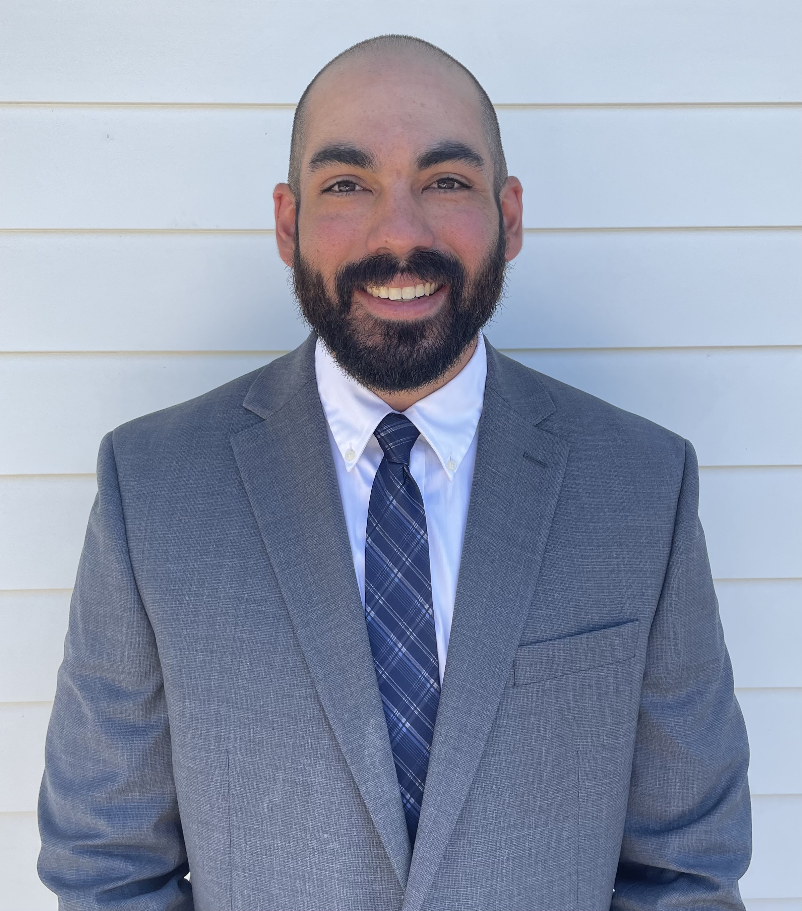

The Caladrius Project (HAVOC-03)
Built a flight-ready long-endurance UAV in a 10-week RDT&E cycle to accelerate mission-capable avionics and systems integration.
CAD, FEA, Avionics Architecture, ML Integration
View Project →Electrical Engineering Portfolio
Electrical Engineering Candidate for PCB Design, Embedded Systems, Avionics, RF/Wireless, and Power Electronics Roles
U.S. Army UAS veteran transitioning into full-time electronics hardware engineering with hands-on design, integration, bring-up, and validation experience.

Technical proof points for avionics, embedded hardware, and power-focused PCB engineering.
Built a flight-ready long-endurance UAV in a 10-week RDT&E cycle to accelerate mission-capable avionics and systems integration.
CAD, FEA, Avionics Architecture, ML Integration
View Project →
Designed a stackable RF control board that added wireless control and board-to-board communication to an ESC platform.
KiCad, ESP32, Arduino IDE
View Project →
Engineered a 4-layer inline protection board to improve 8S motor-control bring-up speed, sensing visibility, and debug repeatability.
KiCad, 4-Layer PCB Layout, Bench Validation
View Project →Organized for recruiter scanability across core hardware engineering domains.
Concise homepage highlights with full engineering details in each project case study.

Built a long-endurance fixed-wing UAV to rapidly field a modular, mission-adaptable platform during a compressed RDT&E schedule.
Designed and built a stackable ESP32 PCB that solved wireless control and expansion limitations in an ESC senior-design platform.
Implemented a discrete transistor-level 555 timer to validate analog timing behavior without relying on an integrated timer IC.

Developed a configurable energy-harvesting PCB to convert low-level, intermittent multi-coil AC input into a usable storage/output pathway.

Engineered an inline 4-layer board that solved protection and sensing-access bottlenecks during high-current DRV motor-control bring-up.

Developing a multi-rotor axial-flux architecture to improve torque density and efficiency for EV and UAV propulsion use cases.
I am actively pursuing full-time electrical engineering opportunities in electronics hardware, PCB design, avionics, embedded systems, RF/wireless, and power electronics.
I am a U.S. Army veteran and senior-year electrical engineering candidate building reliable, testable electronics for aerospace and other high-performance systems through hands-on PCB design, integration, and validation.
I served as an MQ-1C Gray Eagle operator, where mission outcomes depended on technical reliability, team coordination, and operational discipline. That experience pushed me to understand the engineering behind the systems I trusted in the field.
After military service, I transitioned into electrical engineering and committed to practical hardware work: schematic capture, PCB layout, simulation, bring-up, rework, and test. I am now focused on applying that experience in a full-time engineering role.
Quick summary view for recruiters. Open the full resume for complete project history, technical scope, and experience details.
Jon Tolden · Electrical Engineering Resume
Actively seeking full-time electrical engineering roles in electronics hardware, PCB design, avionics, embedded systems, RF/wireless systems, and power electronics.
Secondary availability: UAS advisory, consulting, and freelance PCB support engagements.